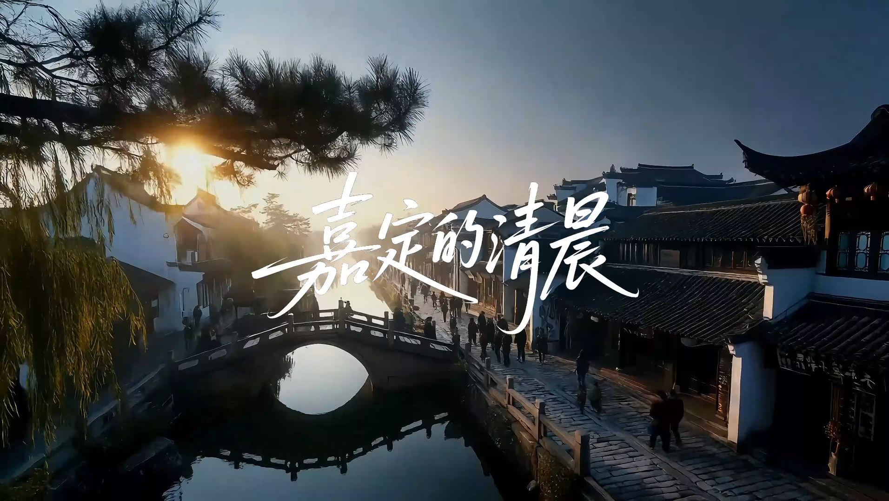
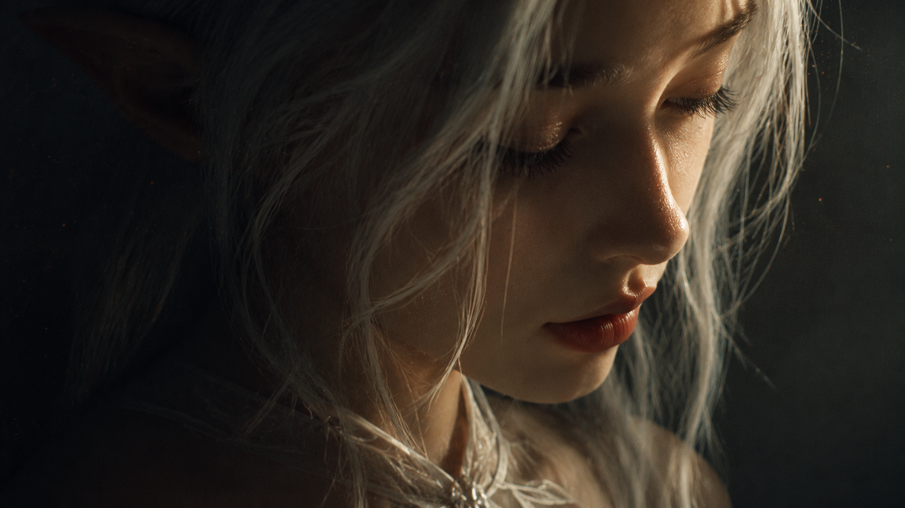
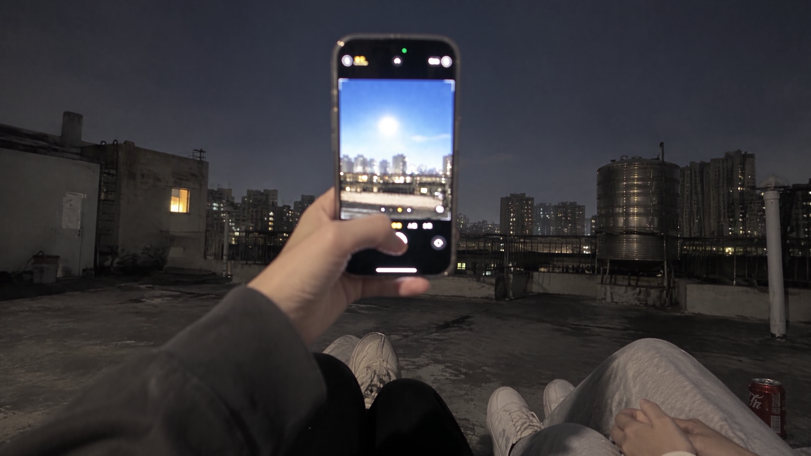

青砚 / ZHU QING
☰
Work
Films
Process
About
← 返回首页
Narrative
Films
叙事影像与视觉表达。以地域文化、记忆、身体和情绪为线索，让每个项目保留自己的色彩与节奏。

01 / CITY FILM
嘉定的清晨
02 / SHORT FILM
回声

03 / VISUAL FILM
自由

04 / VISUAL FRAGMENT
中秋视觉片段